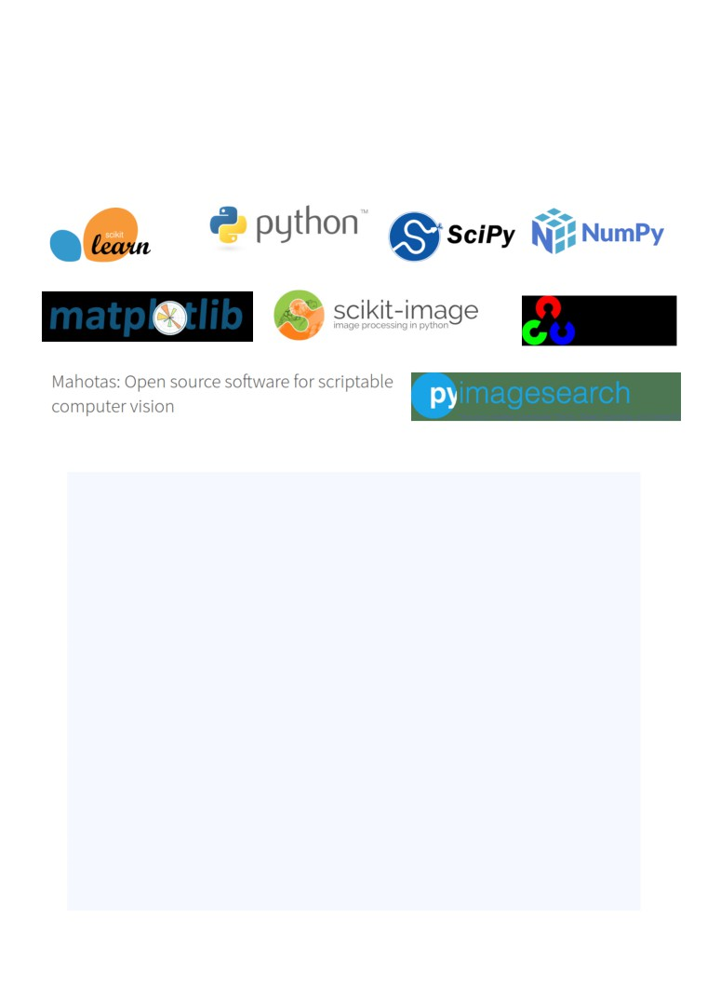
Python e OpenCV
Python e Pacotes Necessários
# CARREGANDO, EXIBINDO E SALVANDO AS IMAGENS:
# python load_display_save.py --image ../images/trex.png
# Importa os pacotes necessários
import argparse
import cv2
# Parser do argumento
ap = argparse.ArgumentParser()
ap.add_argument("-i", "--image", required = True,
help = "Path to the image")
args = vars(ap.parse_args())
# Carrega a imagem:
image = cv2.imread(args["image"])
print("width: {} pixels".format(image.shape[1]))
print("height: {} pixels".format(image.shape[0]))
print("channels: {}".format(image.shape[2]))
# Exibe a imagem e aguarda por um pressionar de teclas
cv2.imshow("Image", image)
cv2.waitKey(0)
# Salva a Imagem, o OpenCV trata o formato automaticamente
cv2.imwrite("newimage.jpg", image)
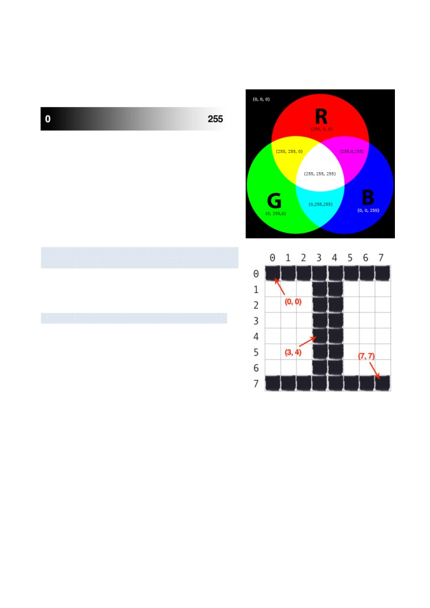
Básico acerca de Imagens
Pixels são a unidade básica de informação:
Os pixels são distribuídos na imagem de acordo com o
sistema de coordenadas descrito ao lado:
Um cuidado necessário é que o OpenCV armazena a tupla
RGB em ordem inversa , a BGR. Por exemplo, é possível
manipular um pixel individual de uma imagem da seguinte
forma:
(b, g, r) = image [0, 0]
image[0, 0] = (0, 0, 255)
Também é possível utilizar fatiamento no Numpy para
acessar partes de uma imagem:
image[0:100, 0:100] = (0, 255, 0)
Isso se deve ao fato de que o OpenCV interpreta imagens
como arrays Numpy.
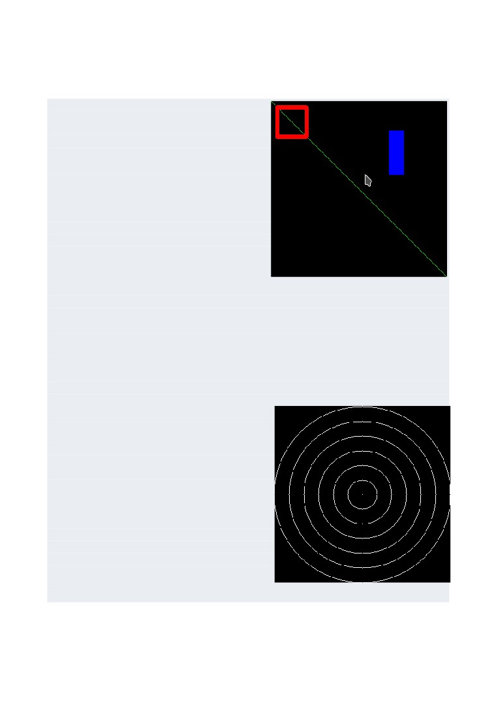
Desenhando
import numpy as np
import cv2
# Cria uma imagem vazia:
canvas = np.zeros((300, 300, 3),
dtype = "uint8")
# Definição das cores:
blue
= (255, 0, 0)
green = (0, 255, 0)
red
= (0, 0, 255)
# Desenha uma linha verde do pixel
(0,0) até o pixel (300,300):
cv2.line(canvas, (0, 0), (300,
300), green)
# Desenha um retângulo verde. O último argumento é a
espessura da linha, em pixels:
cv2.rectangle(canvas, (10, 10), (60, 60), red, 5)
# Ao colocar o argumento de espessura com valor negativo, o
retângulo aparece totalmente preenchido:
cv2.rectangle(canvas, (200, 50), (225, 125), blue, -1)
# Reinicializa o canvas:
canvas = np.zeros((300, 300, 3),
dtype = "uint8")
# coloca o centro dos círculos no
centro do Canvas:
(centerX, centerY) =
(canvas.shape[1] // 2,
canvas.shape[0] // 2)
# Define a cor:
white = (255, 255, 255)
# Desenha círculos:
for r in range(0, 175, 25):
cv2.circle(canvas, (centerX, centerY), r, white)
O tipo de dado é uint8 porque o range é [0,255]. É possível inicializar um inteiro aleatório
com np.random.randint().
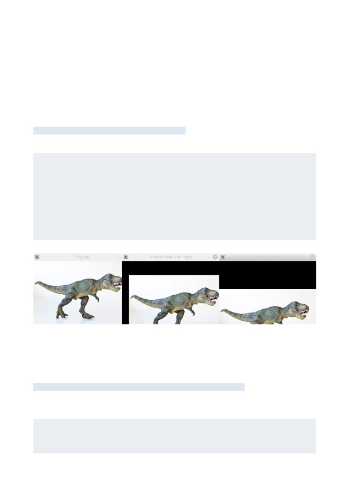
Processamento de Imagens
Transformações de Imagem
Translação
A translação é dada por uma matriz de translação Numpy da seguinte forma:
M = [[1, 0, shiftX], [0, 1, shiftY]]
Essa matriz tem que ser definida como uma matriz de ponto flutuante.
# 25 pixels para a direita e 50 pixels para baixo:
M = np.float32([[1, 0, 25], [0, 1, 50]])
shifted = cv2.warpAffine(image, M, (image.shape[1],
image.shape[0]))
# Agora, usando imutils:
# Para baixo 100 pixels:
import imutils
shifted = imutils.translate(image, 0, 100)
Rotação
A matriz de rotação é definida por:
M = cv2.getRotationMatrix2D(centro, grau , escala)
O primeiro argumento é o centro da rotação, o segundo é quantos graus queremos rotacionar e o
terceiro é a escala de ampliação da imagem.
# Calcula o centro da imagem:
(h, w) = image.shape[:2]
center = (w // 2, h // 2)
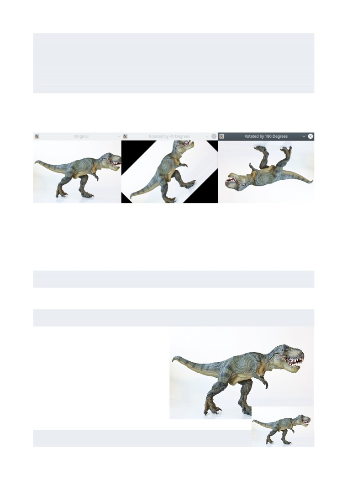
# Rotaciona 45°
M = cv2.getRotationMatrix2D(center, 45, 1.0)
rotated = cv2.warpAffine(image, M, (w, h))
cv2.imshow("Rotated by 45 Degrees", rotated)
# Rotaciona 180° usando imutils.
rotated = imutils.rotate(image, 180)
O método imutils.rotate() sempre determina o centro da imagem, caso o centro de rotação
não seja especificado.
Redimensionamento
Definimos a largura da nova imagem (150 pixels, por exemplo), calculamos a proporção e após
isso, a altura:
r = 150.0 / image.shape[1]
dim = (150, int(image.shape[0] * r))
O código para redimensionamento é:
resized = cv2.resize(image, dim, interpolation =
cv2.INTER_AREA)
Outros métodos para interpolação são:
• cv2.INTER_LINEAR
• cv2.INTER_CUBIC
• cv2.INTER_NEAREST
E finalmente, usando imutils temos:
resized = imutils.resize(image, width = 100)
resized = imutils.resize(image, height = 50)
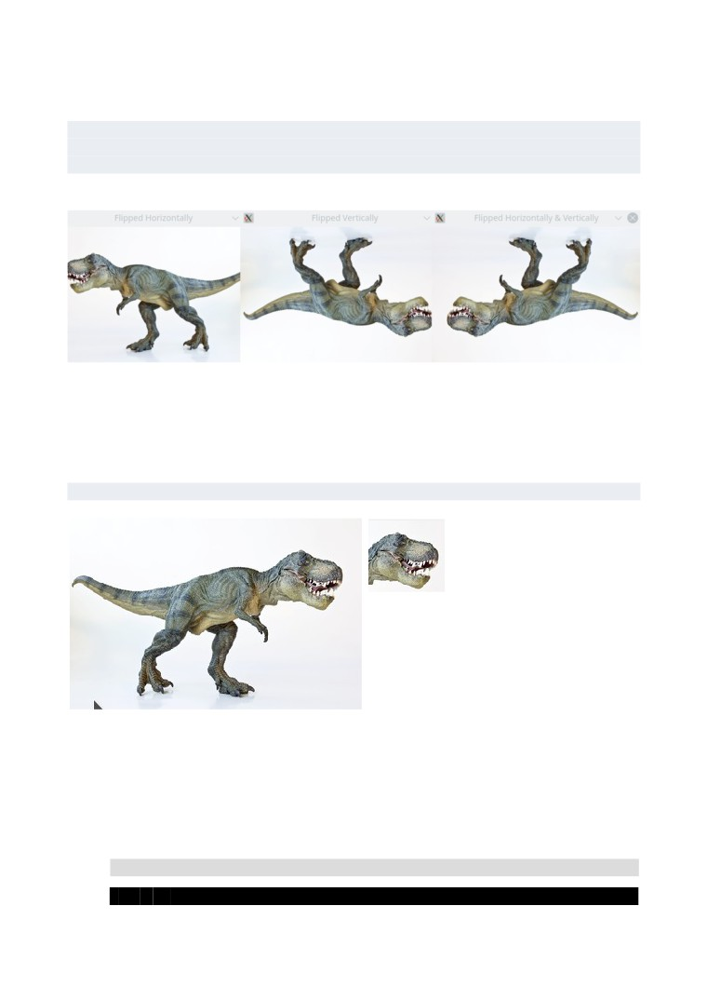
Inversão
flipped = cv2.flip(image, 1)
flipped = cv2.flip(image, 0)
flipped = cv2.flip(image, -1)
Recortar
Basta fazer o fatiamento com Numpy:
cropped = image[30:120 , 240:335]
Aritmética com Imagens
As imagens RGB são armazenadas como inteiro de 8 bits, no range de [0,255].
As operações de soma no Numpy e OpenCV são diferentes.
• No OpenCV, os valores saturam no máximo e mínimo:
cv2.add(np.uint8([200]), np.uint8([100])
200 + 100 = 255
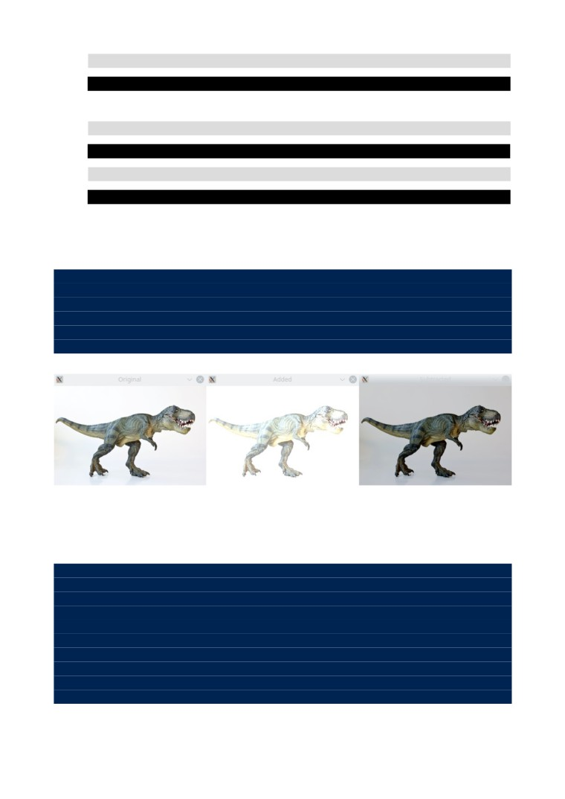
cv2.subtract(np.uint8([50]), np.uint8([100])
50 - 100 = 0
• No Numpy, os valores “passam direto”:
np.uint8([200]) + np.uint8([100])
200 + 100 = 44
np.uint8([50]) - np.uint8([100])
50 - 100 = 206
Fazendo as operações com OpenCV:
M = np.ones(image.shape, dtype = "uint8") * 100
added = cv2.add(image, M)
cv2.imshow("Added", added)
M = np.ones(image.shape, dtype = "uint8") * 50
subtracted = cv2.subtract(image, M)
cv2.imshow("Subtracted", subtracted)
Operações bit a bit:
rectangle = np.zeros((300, 300), dtype = "uint8")
cv2.rectangle(rectangle, (25, 25), (275, 275), 255, -1)
circle = np.zeros((300, 300), dtype = "uint8")
cv2.circle(circle, (150, 150), 150, 255, -1)
bitwiseAnd = cv2.bitwise_and(rectangle, circle)
bitwiseOr = cv2.bitwise_or(rectangle, circle)
bitwiseXor = cv2.bitwise_xor(rectangle, circle)
bitwiseNot = cv2.bitwise_not(circle)
Mascarando a imagem:
# Definindo a máscara:
mask = np.zeros(image.shape[:2], dtype = "uint8")
(cX, cY) = (image.shape[1] // 2, image.shape[0] // 2)
cv2.rectangle(mask, (cX - 75, cY - 75), (cX + 75 , cY + 75),
255, -1)
# Aplicando a Máscara:
# region of the pill is shown
masked = cv2.bitwise_and(image, image, mask = mask)
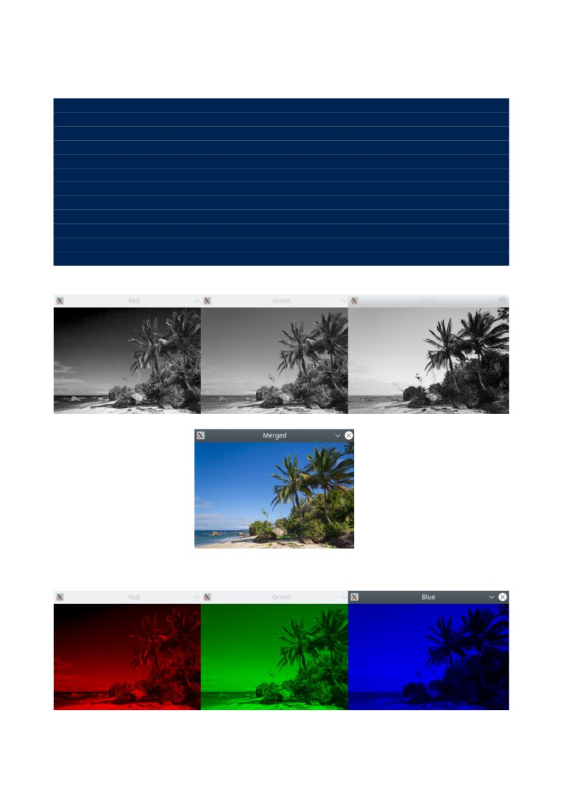
Dividindo e mesclando canais
(B, G, R) = cv2.split(image)
cv2.imshow("Red", R)
cv2.imshow("Green", G)
cv2.imshow("Blue", B)
merged = cv2.merge([B, G, R])
cv2.imshow("Merged", merged)
cv2.imshow("Red", cv2.merge([zeros, zeros, R]))
cv2.imshow("Green", cv2.merge([zeros, G, zeros]))
cv2.imshow("Blue", cv2.merge([B, zeros, zeros]))
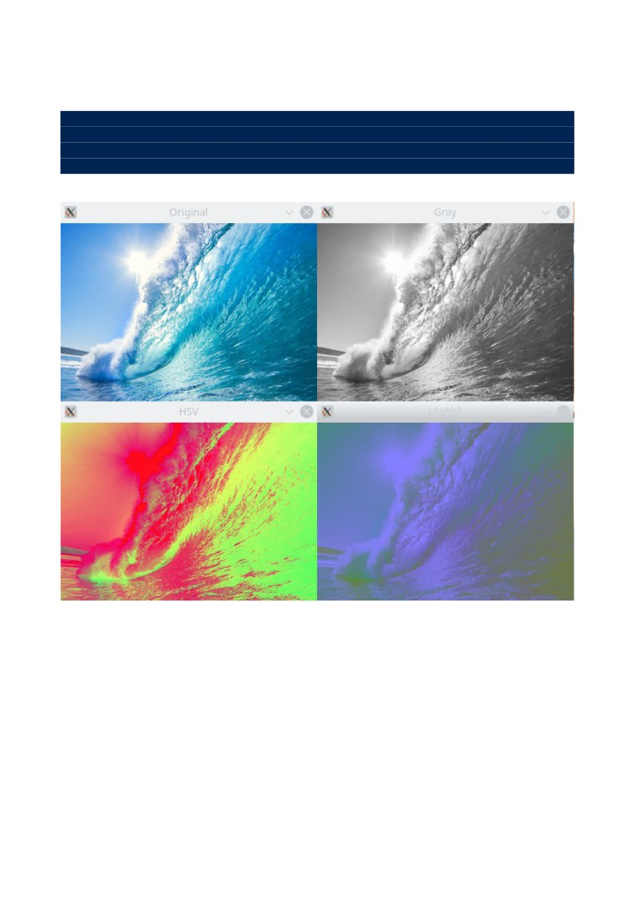
Espaços de Cor
image = cv2.imread(args["image"])
gray = cv2.cvtColor(image, cv2.COLOR_BGR2GRAY)
hsv = cv2.cvtColor(image, cv2.COLOR_BGR2HSV)
lab = cv2.cvtColor(image, cv2.COLOR_BGR2LAB)
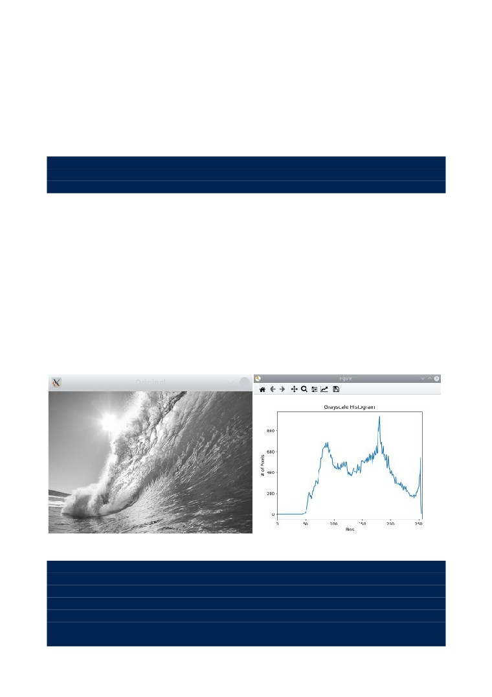
Histogramas
Um histograma representa a distribuição de intensidades de pixel em uma imagem. Pode ser
visualizado como um gráfico que dá uma intuição de alto nível da distribuição de intensidade dos
pixels. Vamos assumir um espaço de cores RGB, então esses valores de pixel estarão na faixa de 0 a
255.
from matplotlib import pyplot as plt
hist = cv2.calcHist(images,channels,mask,histSize,ranges)
plt.plot(hist)
• images: pode usar a lista [myimage]
• channels: [0] para escala de cinza e [0, 1, 2] para os três canais
• mask: Se não houver máscara, pode colocar None
• histSize: Número de intervalos
• ranges: para RGB, [0, 256].
Histograma em escala de cinza
# Inicialize a tupla de cores e a figura matplotlib:
chans = cv2.split(image)
colors = ("b", "g", "r")
plt.figure()
# Loop over the image channels
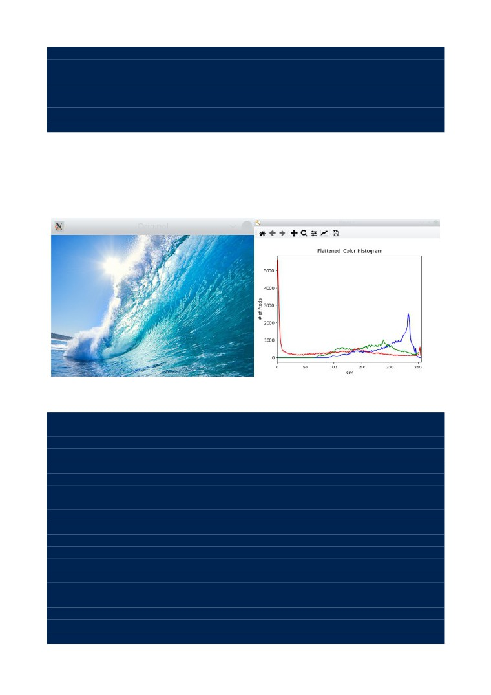
for (chan, color) in zip(chans, colors):
# Create a histogram for the current channel and plot
it
hist = cv2.calcHist([chan], [0], None, [256], [0,
256])
plt.plot(hist, color = color)
plt.xlim([0, 256])
Histograma em cores
# Histogramas em 2D reduzimos para 32 bins para visualizar
melhor:
fig = plt.figure()
# Plot a 2D color histogram for green and blue
ax = fig.add_subplot(131)
hist = cv2.calcHist([chans[1], chans[0]], [0, 1], None, [32,
32], [0, 256, 0, 256])
p = ax.imshow(hist, interpolation = "nearest")
ax.set_title("2D Color Histogram for G and B")
plt.colorbar(p)
# Plot a 2D color histogram for green and red
ax = fig.add_subplot(132)
hist = cv2.calcHist([chans[1], chans[2]], [0, 1], None, [32,
32], [0, 256, 0, 256])
p = ax.imshow(hist, interpolation = "nearest")
ax.set_title("2D Color Histogram for G and R")
plt.colorbar(p)
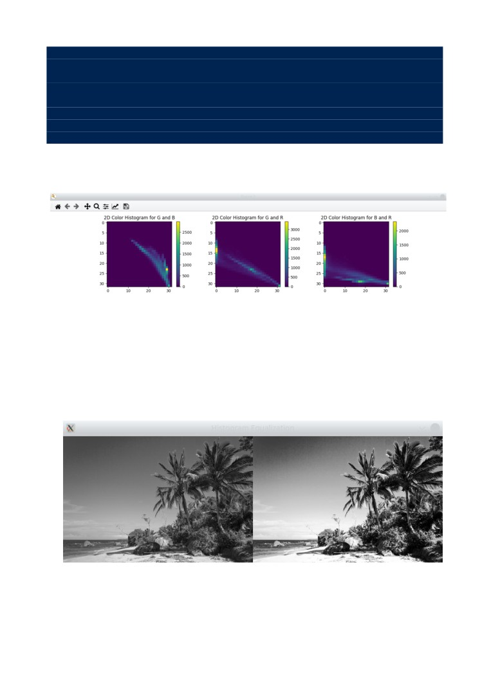
# Plot a 2D color histogram for blue and red
ax = fig.add_subplot(133)
hist = cv2.calcHist([chans[0], chans[2]], [0, 1], None, [32,
32], [0, 256, 0, 256])
p = ax.imshow(hist, interpolation = "nearest")
ax.set_title("2D Color Histogram for B and R")
plt.colorbar(p)
Equalização
A equalização melhora o contraste da imagem “esticando” a distribuição de pixels. É aplicado à
imagens em escala de cinza. É utilizado para melhorar o contraste de imagens de raiox X ou de
satélite.
eq = cv2.equalizeHist(image)
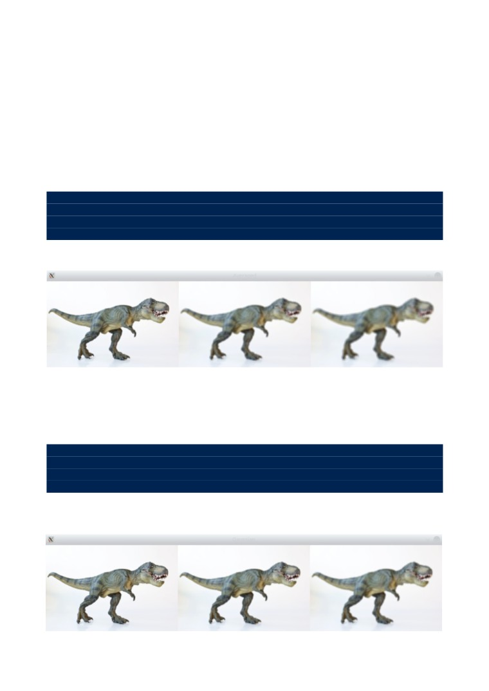
Suavizando e Borrando
Muitas funções de processamento de imagem e visão computacional, como e detecção de limiar e
borda, desempenham melhor se a imagem primeiro for suavizada ou desfocada.
Média
Imagine uma janela (convolution kernel) k x k se deslocando na imagem sobre cada pixel. A média
dos pixels do kernel é aplicada ao pixel central:
blurred = np.hstack([
cv2.blur(image, (3, 3)),
cv2.blur(image, (5, 5)),
cv2.blur(image, (7, 7))])
Desfocagem Gaussiana
Os pixels mais próximos do centro do kernel tem peso maior no cálculo da média:
blurred = np.hstack([
cv2.GaussianBlur(image, (3, 3), 0),
cv2.GaussianBlur(image, (5, 5), 0),
cv2.GaussianBlur(image, (7, 7), 0)])
O último parâmetro é σ, o desvio padrão na direção x. Ao definir como 0, estamos determinando em
função do tamanho do kernel.
Mediana
Ótimo para remoção de ruído “sal-e-pimenta”:
blurred = np.hstack([
cv2.medianBlur(image, 3),
cv2.medianBlur(image, 5),
cv2.medianBlur(image, 7)])
Bilateral
Tentar preservar contornos durante a desfocagem. A primeira função gaussiana considera apenas os
pixels da vizinhança. O segunda gaussiana então modela a intensidade de pixel da vizinhança,
garantindo que apenas pixels com intensidade semelhante são incluídos no cálculo do desfoque.
blurred = np.hstack([
cv2.bilateralFilter(image, 5, 21, 21),
cv2.bilateralFilter(image, 7, 31, 31),
cv2.bilateralFilter(image, 9, 41, 41)])
Os argumentos são vizinhança, desvio padrão de cor e desvio padrão de espaço.
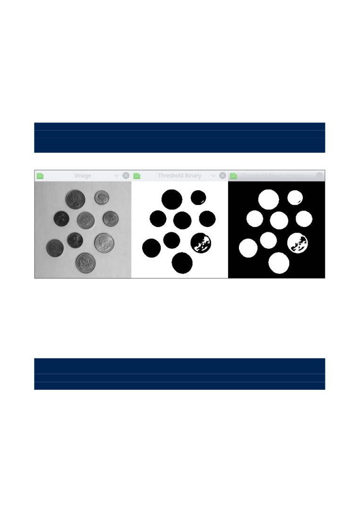
Theresholding
Simples
Aplicar um limiar p que majora (255) os pixels acima desse valor e minimiza (0) os pixels abaixo.
Aplicar uma desfocagem gaussiana antes do limiar ajuda a remover algum ruído de alta frequência
que possa atrapalhar o processo:
image = cv2.cvtColor(image, cv2.COLOR_BGR2GRAY)
blurred = cv2.GaussianBlur(image, (5, 5), 0)
(T, threshInv) = cv2.threshold(blurred, 155, 255, cv2.THRESH_BINARY_INV)
(T, thresh) = cv2.threshold(blurred, 155, 255, cv2.THRESH_BINARY)
Adaptativo
Considera pequenas vizinhanças de pixels e, em seguida, encontra um valor de limiar ideal T para
cada vizinhança.
thresh = cv2.adaptiveThreshold(blurred, 255,
cv2.ADAPTIVE_THRESH_MEAN_C, cv2.THRESH_BINARY_INV, 11, 4)
thresh = cv2.adaptiveThreshold(blurred, 255,
cv2.ADAPTIVE_THRESH_GAUSSIAN_C, cv2.THRESH_BINARY_INV, 15, 3)
• Os argumentos 11 e 15 indica que estamos examinando regiões 11x11 e 15x15 da imagem
• Os argumentos 4 e 3 são o C, que é o valor que é subtraído da média
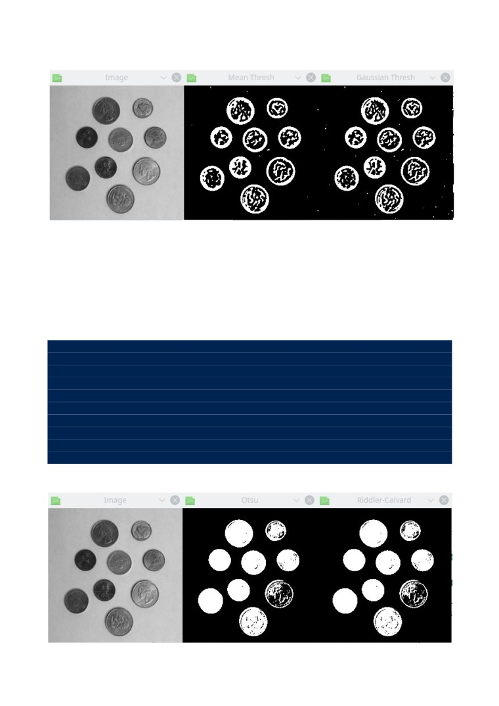
Métodos de Otsu e Riddler-Calvard
O método de Otsu assume que há dois picos no histograma da escala de cinza da imagem. Em
seguida, ele tenta encontrar um valor ótimo para separar esses dois picos (valor T). Embora o
OpenCV forneça suporte para o método de Otsu, a implementação de Luís Pedro Coelho no pacote
mahotas é mais “Pythônico”.
T = mahotas.thresholding.otsu(blurred)
thresh = image.copy()
thresh[thresh > T] = 255
thresh[thresh < 255] = 0
thresh = cv2.bitwise_not(thresh)
cv2.imshow("Otsu", thresh)
# An alternative is to use the Riddler-Calvard method
T = mahotas.thresholding.rc(blurred)
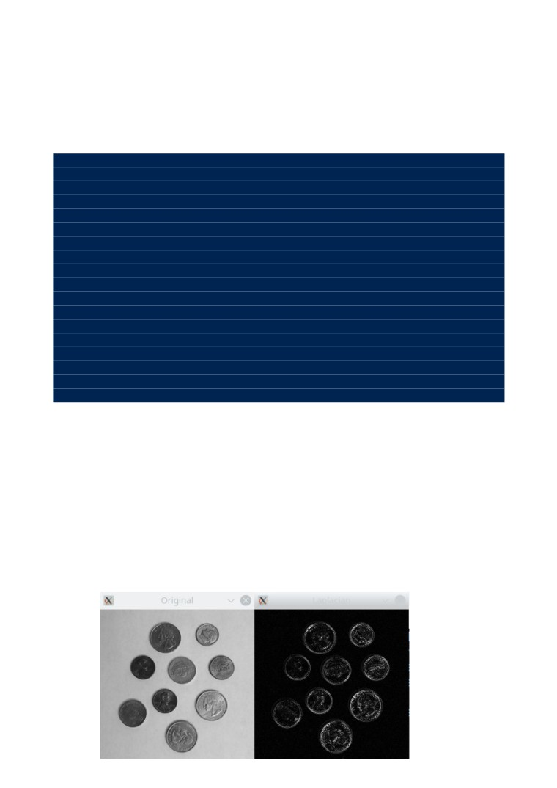
Gradientes e Detecção de Borda
Gradientes
# Transforma em P&B:
image = cv2.cvtColor(image, cv2.COLOR_BGR2GRAY)
cv2.imshow("Original", image)
# Laplaciano
lap = cv2.Laplacian(image, cv2.CV_64F)
lap = np.uint8(np.absolute(lap))
cv2.imshow("Laplacian", lap)
# Sobel
sobelX = cv2.Sobel(image, cv2.CV_64F, 1, 0)
sobelY = cv2.Sobel(image, cv2.CV_64F, 0, 1)
sobelX = np.uint8(np.absolute(sobelX))
sobelY = np.uint8(np.absolute(sobelY))
sobelCombined = cv2.bitwise_or(sobelX, sobelY)
cv2.imshow("Sobel X", sobelX)
cv2.imshow("Sobel Y", sobelY)
cv2.imshow("Sobel Combined", sobelCombined)
Formalmente, a detecção de bordas incorpora métodos matemáticos para encontrar pontos em uma
imagem onde o brilho das intensidades de pixel muda nitidamente.
Temos que usar números de ponto flutuante aqui porque as transições de gradiente podem ser
positivas (preto para branco) ou negativas (branco para preto), e estamos trabalhando com valores
inteiros até agora.
A primeira coisa que vamos fazer é encontrar o "gradiente" da imagem em tons de cinza,
permitindo-nos encontrar regiões semelhantes a arestas na direção x e y.
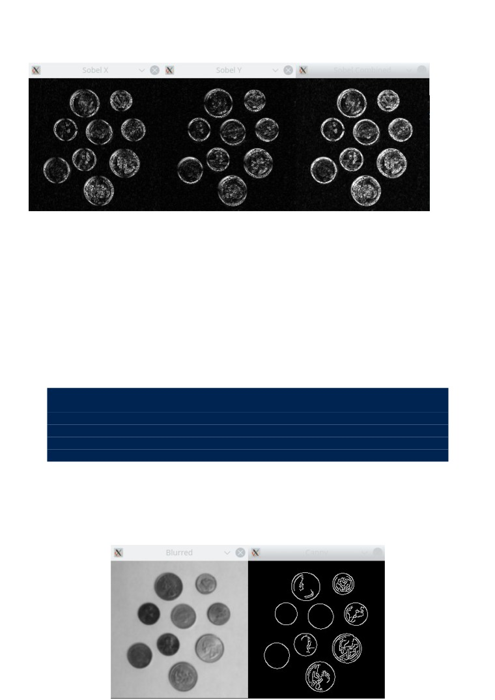
Detecção de bordas de Canny:
• Convertemos para escala de cinza,
• Realizamos redução de ruído (desfocagem), para retirar ruídos de contorno.
• Encontramos o gradiente da imagem (utilizando o kernel Sobel em ambos os horizontes
direção vertical e vertical)
• Etapa de supressão não máxima e limiar de histerese.
image = cv2.imread(args["image"])
image = cv2.cvtColor(image, cv2.COLOR_BGR2GRAY)
image = cv2.GaussianBlur(image, (5, 5), 0)
cv2.imshow("Blurred", image)
canny = cv2.Canny(image, 30, 150)
cv2.imshow("Canny", canny)
Os valores 30 e 150 são os parâmetros threshold1 e threshold2. Qualquer parâmetro
abaixo de threshold1 não é uma borda; qualquer parâmetro acima de threshold2 é uma
borda. Valores intermediários são classificados conforme detalhes não explicados aqui.
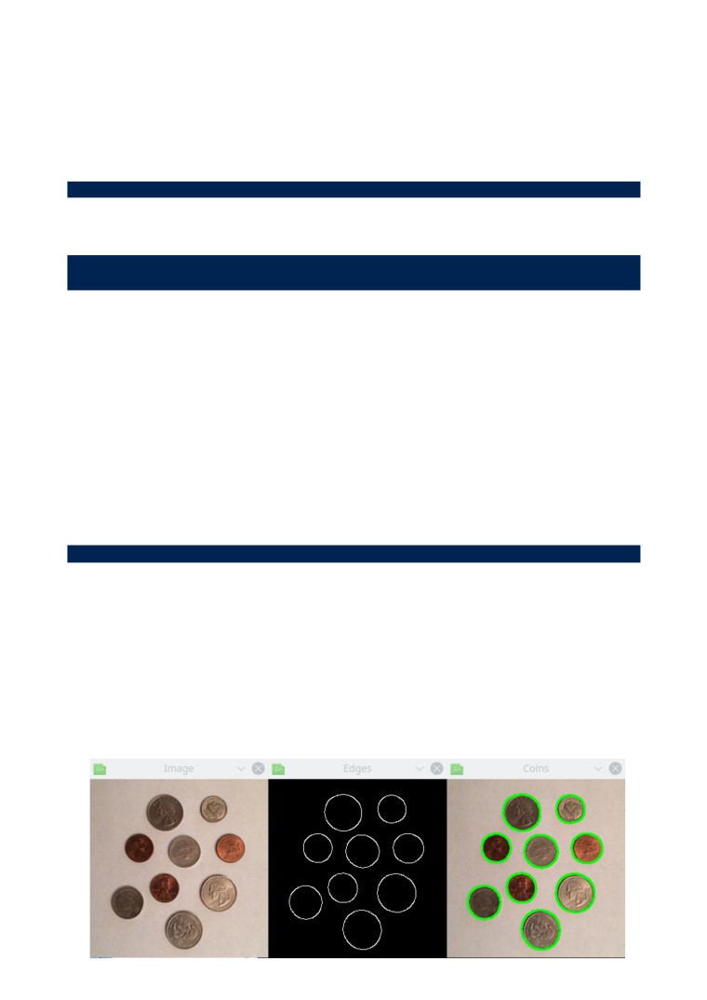
Contornos
Primeiro, obtemos as bordas da imagem:
edged = cv2.Canny(blurred, 30, 150)
Agora, obtemos a lista de contornos:
(cnts, _) = cv2.findContours(edged.copy(), cv2.RETR_EXTERNAL,
cv2.CHAIN_APPROX_SIMPLE)
O método cv2.findContours é DESTRUTIVO para a imagem que passa. Se for necessário
reutilizar sua imagem cortada, certifique-se de copiá-lo antes de chamar cv2.findContours
• O primeiro argumento é a imagem com as bordas detectadas, após o método de Canny.
• O segundo argumento é o tipo de contorno que desejamos. Usamos
cv2.RETR_EXTERNAL para recuperar apenas os contornos mais externos.
• O último argumento é como queremos aproximar o contorno.
Usamos v2.CHAIN_APPROX_SIMPLE para comprimir segmentos horizontais, verticais e
diagonais em suas extremidades. Isso economiza computação e memória. Se quiséssemos todos os
pontos ao longo do contorno, sem compressão, podemos usar cv2.CHAIN_APPROX_NONE;
Contudo, seria desnecessário e um desperdício de recursos.
cv2.drawContours(coins, cnts, -1, (0, 255, 0), 2)
• O argumento coins é nossa imagem sobre a qual desenharemos os contornos
• O argumento cnts é a lista de contornoa obtida por cv2.findContours
• O terceiro argumento é qual contorno quremos desenhar. O valor -1 indica que queremos
desenhar todos
• O quarto argumento india a cor do contorno
• O quinto indica a espessura do contorno
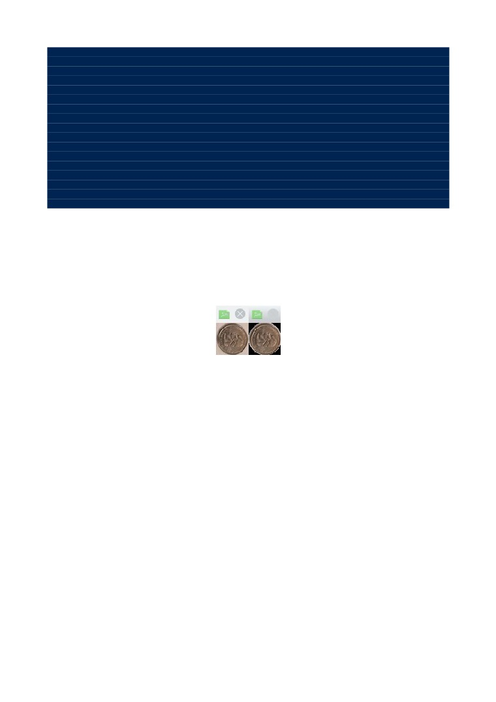
for (i, c) in enumerate(cnts):
# Nós podemos pegar o "bouding box" de cada contorno:
(x, y, w, h) = cv2.boundingRect(c)
# Vamos extrair o contorno usando fatiamento de array:
print("Coin #{}".format(i + 1))
coin = image[y:y + h, x:x + w]
cv2.imshow("Coin", coin)
# Vamos construir uma máscara para a moeda, encontrando
# O círculo que é inscrito no contorno:
mask = np.zeros(image.shape[:2], dtype = "uint8")
((centerX, centerY), radius) = cv2.minEnclosingCircle(c)
cv2.circle(mask, (int(centerX), int(centerY)), int(radius), 255, -1)
mask = mask[y:y + h, x:x + w]
cv2.imshow("Masked Coin", cv2.bitwise_and(coin, coin, mask = mask))
A função cv2.boundingRect() toma o contorno, e então retorna uma tupla da posição x e y
que o retângulo começa em, seguido pela largura e altura do retângulo.
Já a cv2.minEnclosingCircle() pega o contorno e retorna as coordenadas x e y do círculo inscrito
e seu raio.